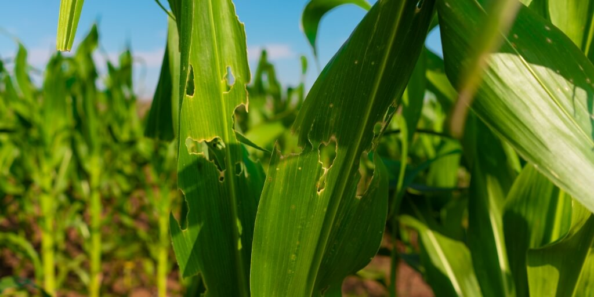
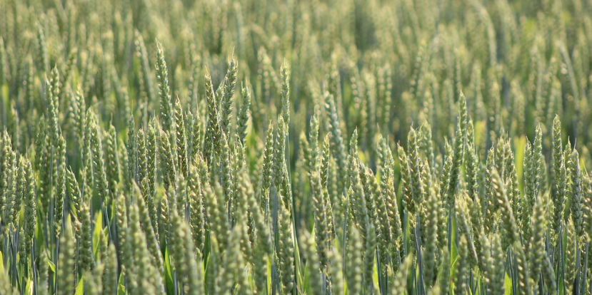

O Elo entre o Campo e a Natureza
Criei este site para mostrar que o futuro da nossa agricultura depende do equilíbrio com a natureza.
A ideia central do meu projeto é bem direta: quando o produtor usa a tecnologia para monitorar a lavoura e combater as pragas no momento certo, ele evita o desperdício de defensivos agrícolas.
Com menos produtos químicos aplicados sem necessidade, a gente consegue proteger o solo, preservar os insetos bons e diminuir a poluição do ar.
É assim que o manejo inteligente ajuda a descarbonizar o campo!
Nossas Soluções Sustentáveis

Manejo Integrado de Pragas
Esse controle serve para acompanhar a plantação de perto e usar a tecnologia só na hora certa. Com base no manual de Boas Práticas da Embrapa, esse jeito de cuidar da lavoura diminui o uso de produtos químicos e protege os insetos que ajudam a conservar a plantação.
Acessar Manual Embrapa
Descarbonização
A descarbonização serve para diminuir a quantidade de carbono jogada no ar. No campo, como é indicado na Cartilha ABC+ do Paraná,quando a gente evita usar o trator sem necessidade e economiza nos produtos da lavoura, ajudamos a limpar o ar e a combater o efeito estufa.
Ver Cartilha ABC+ PRComparando os Modelos de Agricultura
| Prática Monitorada | Agricultura Tradicional | Agricultura Sustentável |
|---|---|---|
| Uso de Defensivos | Aplicação em datas fixas, gerando desperdício e gastos desnecessários. | Aplicação planejada, usando o produto apenas se as pragas surgirem na lavoura. |
| Insetos Benéficos | Os insetos que ajudam a planta acabam eliminados junto com as pragas. | Os insetos benéficos são preservados para ajudar a proteger o ecossistema. |
| Emissão de Carbono | Uso excessivo de tratores e insumos, aumentando os gases poluentes. | Redução das viagens de trator, economizando combustível e limpando o ar. |
AgroGame Interativo ( Jogavel somente no computador )
Divirta-se com o nosso desafio interativo focado no manejo inteligente de pragas e na descarbonização do campo.